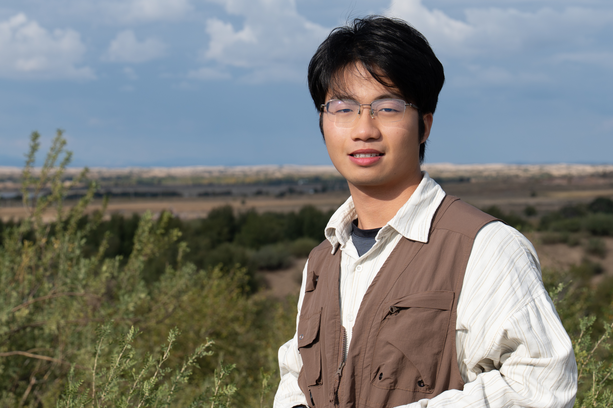

Biography
Yifan Tu received the B.S. degree from the Harbin Institute of Technology (Weihai) in 2026. Yifan Tu is currently pursuing the master's degree at Peking University.


Master's Student
Master's Students
Yifan Tu received the B.S. degree from the Harbin Institute of Technology (Weihai) in 2026. Yifan Tu is currently pursuing the master's degree at Peking University.
2026–Present, Peking University, M.S.
2022–2026, Harbin Institute of Technology (Weihai), B.S.
涂一凡2026年获得哈尔滨工业大学（威海）学士学位，目前在北京大学攻读硕士学位。
2026–至今，北京大学，硕士
2022–2026，哈尔滨工业大学（威海），学士